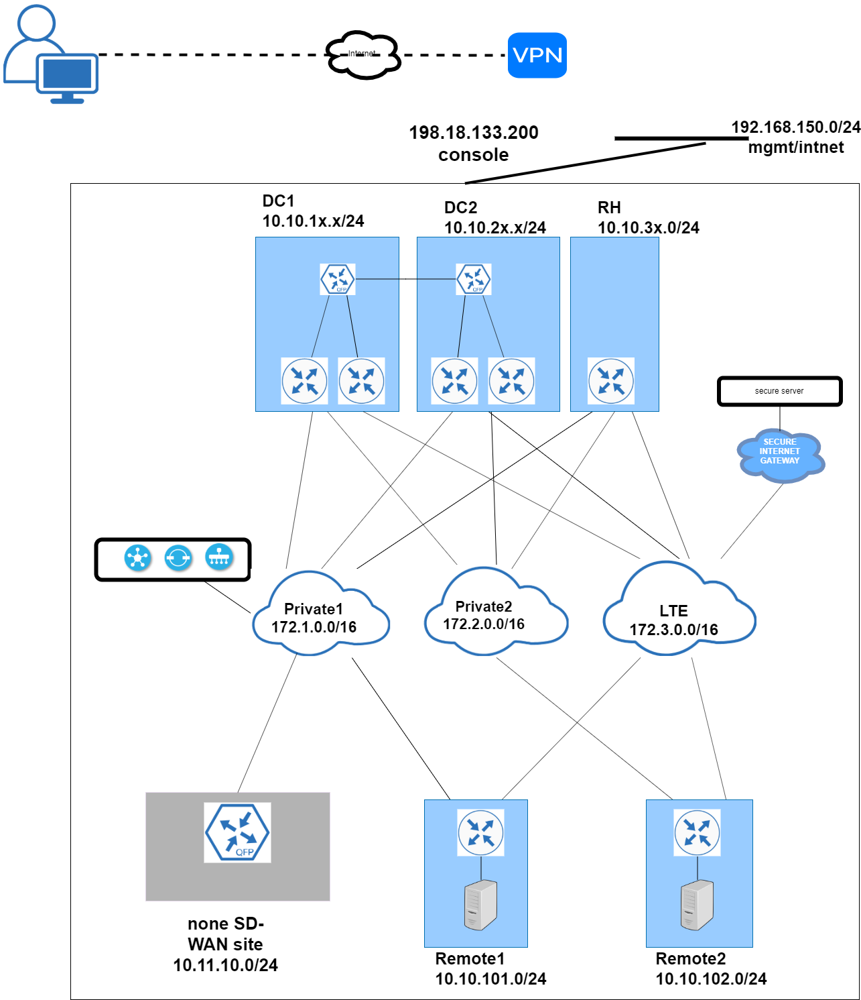

About this lab
In this lab, you will be introduced with advanced SD-WAN topics including advanced routing, central control policy, QoS, per-tunnel QoS, Direct Internet Access, Cloud OnRamp for SaaS, Dynamic tunneling. The lab will be built with Network Function Virtualization for Viptela and IOS XE SD-WAN image.
Lab Flow
In this lab, you will follow the lab guide to configure:
- Advanced Routing
- Migration
- Performance & Optimization
Lab Access
Below table provides the IP addresses and credentials for the devices used in this lab:
| Device | IP | Username | Password |
|---|---|---|---|
| vManage | 198.18.133.200:19001 | admin | admin |
| vbond | 198.18.133.200:19002 | admin | admin |
| vSmart | 198.18.133.200:19003 | admin | admin |
| DC1-WE1 | 198.18.133.200:19010 | admin | admin |
| DC1-WE2 | 198.18.133.200:19009 | admin | admin |
| DC2-WE1 | 198.18.133.200:19014 | admin | admin |
| DC2-WE2 | 198.18.133.200:19012 | admin | admin |
| RH-WE1 | 198.18.133.200:19016 | admin | admin |
| R1-WE1 | 198.18.133.200:19017 | admin | admin |
| R2-WE1 | 198.18.133.200:19020 | admin | admin |
| R1-VM1 | 198.18.133.200:19018 | viptela | viptela |
| R2-VM1 | 198.18.133.200:19019 | viptela | viptela |
You can also login the remote host via VNC.
| Device | IP | Username | Password |
|---|---|---|---|
| R1-VM1 | 198.18.133.200:30500 | viptela | viptela |
| R1-VM1 | 198.18.133.200:30501 | viptela | viptela |
Lab Topology
